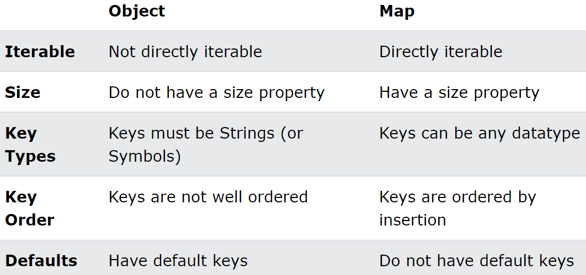

Map : key / Value 형태의 데이터를 한 개의 배열로 만들어서 다시 배열에 저장하는 방식
-
선언 및 포기화 : new Map(), new Map([["key","value"],["key2","value2"],....])
-
기본적으로 중첩 구조이기 때문에 key의 중복 확인이 필수
-
key를 식별자로 사용하는 방식이므로 get("ketName"), set("keyName", value) 메서드를 제공
-
자바스크립트 객체를 배열화 시킨 구조라고 생각하면 편함 => 2차원 배열과 비슷한 형식
-
기본적으로 map은 타입제한을(문자열 추천) 하는것이 원칙이다. => key의 타입이 달라지면 관리가 어려워지기 때문=> 자바스크립트 객체도 key는 모두 문자열을 사용하는 것과 같은 원리
-
이터러블 (entries )= forof 객체 forin
배열 포이치ㅡ 반복문
-

Javascript Object vs Map
